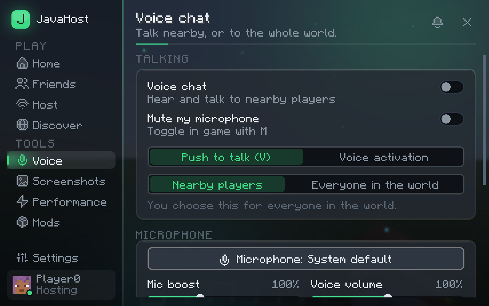

Proximity voice chat
Voices fade with distance, or switch the whole world to party voice. Nothing extra to install.

Host your Minecraft world straight from your PC. Friends join in one click.
Free and open source. For Windows, macOS and Linux.
Hosting
Open a world and press Host. No rental, no port forwarding, nothing to set up.

Friends
Add friends by their Minecraft name. One button brings them into your world, and one takes you to theirs.

Low ping
Your friend's game connects directly to yours, with nothing in between. A relay only steps in when a router says no.
240 ms is a real measurement: a home connection in the Middle East reaching a friend in the same country through the nearest free public relay.
And more
Everything a group needs, inside one mod and behind one key.
Voices fade with distance, or switch the whole world to party voice. Nothing extra to install.

Install mods and modpacks from the menu. A friend who joins gets the same ones automatically.

List your world for anyone to find, or visit someone else's.
Game modes, kick and ban, and world rules you can lock.
Hold Z in game to invite, mute or grab a screenshot.
Install
JavaHost gets its own launcher profile, so your normal Minecraft stays exactly as it is.
For Fabric, Minecraft 1.21 to 26.3. All downloads
Questions
Yes, for one-click invites, voice, shared packs and modded worlds: send them this page. Someone without it can still join with the address on your Host tab.
Almost always, with nothing to configure. JavaHost tries a direct connection first, then your router's own port opening, then IPv6, and finally a relay.
Java Edition 1.21 to 1.21.11 and 26.1 to 26.3, on Fabric. Friends need the same version to play together.
Yes. When a friend joins your modded world, JavaHost downloads the same mods for them and brings them back in. Their own mods are kept safe.
Yes. JavaHost is open source under the MIT licence, with no account and nothing to pay for. Your PC does the hosting.